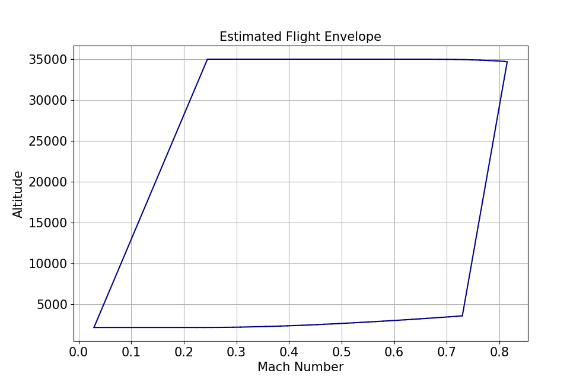
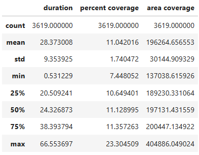
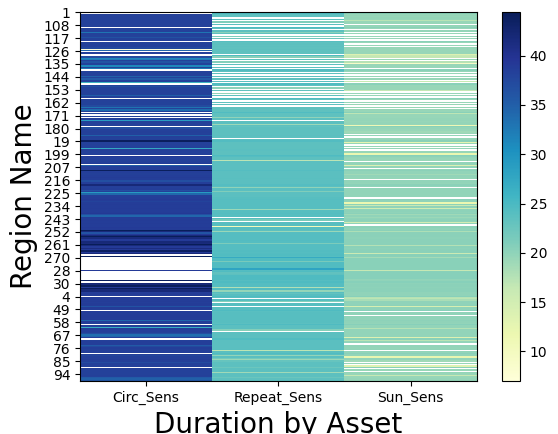

Data analysis#
This section details the Python data types that facilitate efficient data analysis when working with PySTK. As you interact with STK’s simulation results, you may need to analyze large volumes of data. To accomplish this, you can leverage NumPy arrays and Pandas DataFrames. Together, NumPy arrays and Pandas DataFrames provide a suite of tools for managing and analyzing the data produced by STK. In this section, learn how to apply these data types to enhance your PySTK workflows.
NumPy arrays#
NumPy arrays are a widely supported foundational data structure for numerical computations in Python. They enable high-performance, multi-dimensional data storage and operations, making them ideal for handling time-series data, matrices, and other numerical results generated by STK. By leveraging NumPy, you can perform vectorized operations, indexing, broadcasting, and complex mathematical analyses efficiently.
You can convert a dataset collection in row format to a NumPy array. The to_numpy_array() method, called on DataProviderResultDataSetCollection, returns a data provider’s results dataset collection as a 2D NumPy array. This array has a shape equal to the total number of rows in the dataset collection and the total number of unique columns fields in the dataset collection. For example, if the computed All Region By Pass data provider results dataset collection contains 100 rows and 11 column fields, the to_numpy_array() method would return a NumPy array of the entire result set and would have a shape of (100, 11), where 100 is the number of rows and 11 is the number of columns.
To use this capability, you must have Numpy installed in your local Python development environment.
The following example uses NumPy arrays for flight profile data.
# Aircraft aircraft: Aircraft object
from scipy.spatial import ConvexHull
import matplotlib.pyplot as plt
# compute data provider results for an aircraft's Flight Profile By Time
field_names = ["Mach #", "Altitude"]
time_step_sec = 1.0
flight_profile_data_provider = aircraft.data_providers.item("Flight Profile By Time")
flight_profile_data = flight_profile_data_provider.execute_elements(
self.get_scenario().start_time, self.get_scenario().stop_time, time_step_sec, field_names
)
# convert dataset collection in a row format as a Numpy array
flight_profile_data_arr = flight_profile_data.data_sets.to_numpy_array()
# plot estimated fligth envelope as a convex hull
hull = ConvexHull(flight_profile_data_arr)
plt.figure(figsize=(15, 10))
for simplex in hull.simplices:
plt.plot(flight_profile_data_arr[simplex, 1], flight_profile_data_arr[simplex, 0], color="darkblue")
plt.title("Estimated Flight Envelope", fontsize=15)
plt.xlabel("Mach Number", fontsize=15)
plt.ylabel("Altitude", fontsize=15)
plt.tick_params(axis="x", labelsize=15)
plt.tick_params(axis="y", labelsize=15)
plt.grid(visible=True)
The resulting flight data plot looks like this:
For more information, see Numpy.
Pandas DataFrames#
Pandas DataFrames offer a powerful and flexible way to organize and manipulate structured data. Designed for handling tabular data, DataFrames enable you to store, filter, and transform simulation results. With Pandas, you can seamlessly work with time-indexed data, perform group-based analysis, and integrate your results with a wide range of data analysis and visualization tools.
You can convert a dataset collection in row format as a Pandas DataFrame. DataFrames are the key to Pandas’ fast and efficient data manipulation and analysis. They are a two-dimensional, tabular data structure with labeled indexing for rows and columns, where the columns can contain data of various data types. DataFrames supports powerful aggregation and transformation capabilities, time series capabilities, merging operations of datasets, hierarchical indexing, vectorized operations, flexible reshaping capabilities, and much more.
The to_pandas_dataframe() method called on DataProviderResultDataSetCollection, returns a data provider’s results dataset collection as Pandas DataFrame. The DataFrame row index length, equal to the total number of rows in the dataset collection and each column in the DataFrame, maps to a unique field name in the dataset collection. For example, if the computed Flight Profile by Time data provider results dataset collection contains 6000 rows and 100 fields column fields, the returned DataFrame has a row index length of 6000 and 100 columns.
To use this capability, you must have Pandas installed in your local Python development environment.
Examples of using Pandas DataFrames#
Example 1#
This example provides the Python implementation for converting All Regions By Pass data provider results to a Pandas DataFrame with a default numeric row index.
# CoverageDefinition coverage: Coverage object
# compute data provider results for All Regions by Pass coverage
coverage_data_provider = coverage.data_providers.item("All Regions By Pass")
coverage_data = coverage_data_provider.execute()
# convert dataset collection in a row format as a Pandas DataFrame with default numeric row index
coverage_df = coverage_data.data_sets.to_pandas_dataframe()
The to_pandas_dataframe() method supports setting a single column as the index. To create a hierarchical index or a composite index comprised of more than a single column, get your data provider’s results dataset collection as a Pandas DataFrame with the default numeric index, then update the index accordingly.
# Access facility_sensor_satellite_access: Access calculation
# compute data provider results for basic Access
field_names = ["Access Number", "Start Time", "Stop Time", "Duration"]
access_data = facility_sensor_satellite_access.data_providers["Access Data"].execute_elements(
self.get_scenario().start_time, self.get_scenario().stop_time, field_names
)
# convert dataset collection in a row format as a Pandas DataFrame
index_column = "Access Number"
access_data_df = access_data.data_sets.to_pandas_dataframe(index_element_name=index_column)
Example 2#
This example provides the Python implementation for computing descriptive statistics access measurements.
# CoverageDefinition coverage: Coverage object
import pandas as pd
# compute data provider results for All Regions by Pass coverage
coverage_data_provider = coverage.data_providers.item("All Regions By Pass")
coverage_data = coverage_data_provider.execute()
# convert dataset collection in a row format as a Pandas DataFrame with default numeric row index
all_regions_coverage_df = coverage_data.data_sets.to_pandas_dataframe()
# compute descriptive statistics of Duration, Percent Coverage, Area Coverage
all_regions_coverage_df[["duration", "percent coverage", "area coverage"]].apply(pd.to_numeric).describe()
This produces the following data table:
Example 3#
This example provides the Python implementation for plotting a heat map of Duration By Asset for each access region.
# CoverageDefinition coverage: Coverage object
from matplotlib import pyplot as plt
import numpy as np
# compute data provider results for All Regions by Pass coverage
coverage_data_provider = coverage.data_providers.item("All Regions By Pass")
coverage_data = coverage_data_provider.execute()
# convert dataset collection in a row format as a Pandas DataFrame with default numeric row index
coverage_all_regions_elements = coverage_data_provider.elements
all_regions_coverage_df = coverage_data.data_sets.to_pandas_dataframe(
data_provider_elements=coverage_all_regions_elements
)
# reshape the DataFrame based on column values
pivot = all_regions_coverage_df.pivot_table(index="region name", columns="asset name", values="duration")
# plot heat map that shows duration by asset name by region
plt.xlabel("Duration by Asset", fontsize=20)
plt.xticks(ticks=range(len(pivot.columns.values)), labels=pivot.columns.values)
plt.ylabel("Region Name", fontsize=20)
plt.yticks(ticks=np.arange(len(pivot.index), step=10), labels=pivot.index[::10])
im = plt.imshow(pivot, cmap="YlGnBu", aspect="auto", interpolation="none")
plt.colorbar(orientation="vertical")
This produces the following data map:
See Pandas for more information.